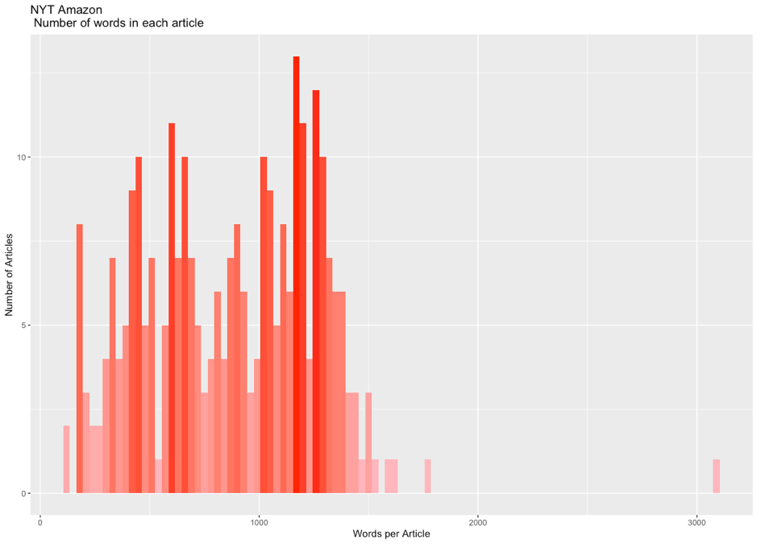

Does the Billionaire Model Work?

Magazines and newspaper companies are mostly started by entrepreneurs and businessmen as side
projects. Nowadays, tech billionaires still have tend to acquire prestigious media brands in the
name of “giving back” and “aiming to make publications self-sufficient”. But how tech
billionaires are reshaping the media landscape? Does the billionaire model work in terms of
profitability, neutrality and competence?
Despite the overall perception that newspapers and magazines are a sunset industry, billionaires,
especially those associated with the tech industry, have entered the media landscape, presenting
themselves as the saviors of various traditional media companies. Recent high profile examples
include the purchase by Marc Benioff of Time, by Jeff Bezos of the Washington Post, by Jack Ma
of the South China Morning Post, by Laurene Powell Jobs of The Atlantic, and by Patrick
Soon-Shiong of the LA Times.
According to their own statements, these billionaires relied on neither intuition nor analysis
when making these acquisitions but rather considered their values to be aligned with those of
the publications in question.
These media buyers also promised that they would refrain from intervening in editorial decisions,
though concerns about their true intentions remain. They have made clear in interviews that they
seek to develop thriving publication businesses through technological transformation, thereby
bringing a digital perspective to print publications that will help journalism to survive as a
business.
It is uncertain whether such tech magnates are merely forging tools to shape public opinion or
are actually seeking to benefit the public interest. The aim of the present article is to shed
light on the kind of revolution that these new media owners are seeking to bring about in print
media. The discussion addresses the potential for newsrooms and journalists to maintain their
independence and the value of such media properties for the sharp-witted investor.
The Washington Post serves as the primary example and the New York Times as the primary point of
comparison, the latter being a historical rival of the Post for the up-market audience that was
not, however, recently purchased by a billionaire. As the discussion makes clear, the Post is
widely regarded as a successful case of the revitalization of a regional print outlet to serve
as an international creator of news content in the digital arena.
I. Corporate ownership and media impartiality
Though there is no direct evidence that changes in newspaper ownership of the sort just described
impede editorial independence, observers have expressed skepticism regarding the reliability of
the information that newly purchased papers are disseminating.
Leighley (2004) found that independently owned newspapers differ from corporately owned ones in
terms of aspirations, with independent organizations being more committed to supporting
ambitious journalistic practices and corporately held ones more focused on maximizing profits
for their investors. One of the major concerns about the latter type of paper is self-censorship
in the newsroom when it comes to covering news related to its owner. In particular, Bezos’s
behavior, both in public and behind the scenes, is being scrutinized for its consistency with
his claim that he does not influence the Post’s editorial processes.
In order to explore these issues objectively, it is necessary to identify and quantify any
changes in the coverage by media outlets following their purchase by various billionaires
and determine whether these changes are associated with the change in ownership. For this
purpose, the textual analysis of news stories about Amazon by the Post and New York Times
presented here was conducted. Specifically, articles that were published as news with the
subject “Amazon.com Inc” were collected from Proquest’s U.S. Major Daily database for the
period from January 1, 2012, through December 31, 2015. This timeframe was chosen because it
brackets Bezos’s purchase of the Post in 2013. In total, 203 pieces of news from the Post
and 281 from the New York Times were identified for analysis.
As the histogram shows,
the average word count for articles in the Times (1,500) was significantly greater than that for
articles in the Post (1,000). These statistics are of interest with respect to the quality of
the news coverage and thus to editorial independence following the purchase of a media outlet.
For while the length of stories does not necessarily correlate with their quality, it is
nevertheless the case that shorter stories often lack the scope to provide meaningful
intellectual stimulation.
Thus scholars have found
that increased competition reduces the quality of news because journalists assume that their
readers prefer emotional stories to thought-provoking ones (e.g., Zaller, 1999). Thus, while
attracting customers is crucial for any business to survive, this imperative may be inconsistent
with the journalistic objective of educating the public and may come to be replaced with the
goal of entertaining the public.
In order to analyze word frequency, all of the words that appeared over 200 times in the selected
articles were used to create a word cloud. The articles in both the Post and the Times naturally
made frequent use of the word “book” owing to the importance of the book trade for Amazon’s
business. This was especially the case after the retailer’s launch of its Kindle Unlimited
subscription in 2014 touched off a conflict with the publisher Hachette regarding the pricing of
e-books. This conflict was reported in detail by both news outlets. In the Times, a great
proportion of the articles mentioned Amazon’s peer companies in various industries, such as
Google (as a technology firm) and Walmart (as a retailer). By contrast, these companies were
rarely mentioned in the Post’s articles.
There is an obvious difference between the two papers in their coverage of Amazon, with the Times
showing greater interest in the company’s financial performance. Thus the word-level analysis
revealed that the Times’s coverage more often used such terms as “tax,” “invest,” “market,”
“revenue,” “sale,” “deal,” “share,” “store,” and “product.” The company’s performance as a
technology provider was another focus of the coverage in the Times, as shown by the frequency of
such terms as “Internet”, “video”, “technology,” and “web.” The word-level analysis of the
articles in the Post indicates that that paper favored broader, non-specific categories when
covering Amazon-related issues. Further, the words “Bezos”, “Washington,” and “Post” appeared
more frequently than in the Post than in the Times, though in large part because the articles
about Amazon in the former paper included the disclaimer that “Amazon.com chief executive
Jeffrey P. Bezos owns The Washington Post.”
When it comes to sentiment analysis, as the chart shows, a similar pattern was found for both
newspapers, with “anticipation”—a relatively moderate sentiment compared with the others
documented—receiving the highest score. The package and method were designed to measure
sentiment on Twitter. Therefore, the sentiments included were “anger,” “anticipation,”
“disgust,” “fear,” “joy,” “sadness,” and “surprise.” These findings are consistent with the
notion that the shift in the Post’s ownership has had little influence on the portrayal of its
famous new owner.
However, this analysis of word counts and frequencies and of sentiments may not provide an
accurate picture of the news reporting process. Further, the four-year time frame may have been
insufficient to detect the fundamental, long-term evolution of news coverage, while the
differing reporting habits of the two news outlets may be less significant than a first glance
would suggest. The Post’s preference for short articles, even if intended to pander to the
tastes of its readers, therefore, may not significantly compromise the objectivity and
professionism of its reporting but may rather be seen as an aspect of the paper’s strategic
transformation.
A methodological problem must also be acknowledged regarding the Post’s tendency, apparent in
the data collected for this study, to modify and repost the same piece of news multiple
times. Regardless of the extent of the modification, subsequent iterations of a single story
were identified as distinct stories by Proquest’s algorithm. The resulting duplication may
compromise the accuracy of the count-based method used here.
II. The impact of increased funding on the newsroom revolution
Because he bought the Post with $250 million of his own money, rather than Amazon’s, Bezos was
not compelled to convince his company’s bottom line-focused shareholders that the 140-year-old
newspaper would be profitable after its reinvention as a "media and technology company."
Nevertheless, the Post does enjoy some financial benefits as a result of the purchase. Thus, for
instance, compared with its main competitor, the New York Times, the paper receives some four
times as much advertising from Amazon.com—as indeed would be expected.
| Advertiser |
The adevertiser sent this percent of traffic to these websites |
WP traffic percent |
NYT traffic percent |
| YOUTUBE |
5.09% |
79.1% |
20.9% |
| NORDSTORM |
3.94% |
39.4% |
60.6% |
| MACYS |
2.71% |
28.1% |
71.9% |
| AMAZON |
1.97% |
80.2% |
19.8% |
| WAYFAIR |
1.64% |
48.8% |
51.2% |
| SAKSFIFTHAVENUE |
1.63% |
29.5% |
70.5% |
| SHOPBOP |
1.52% |
4.9% |
95.1% |
| NEIMANMARCUS |
1.27% |
32.9% |
67.1% |
| SAKESOF5TH |
1.10% |
23.6% |
76.4% |
| FACEBOOK |
1.05% |
51.4% |
48.6% |
According to the website analytics firm SimilarWeb, the top five advertisers for the websites of
both the Times and the Post are Youtube, Nordstrom, Macy’s, Amazon, and Wayfair. As an
advertiser, Amazon sent a total of 2.0 percent of its traffic to these two newspaper websites,
of which 80.2 percent went to the Post and 19.8 percent to the Times (this being the four-fold
difference just mentioned).
Another indication of the resources available to the Post is that it runs few advertisements on
mobile devices and almost none on its homepage. Rather, advertisements appear only in
association with the inside articles, where they promote the Post’s own products, such as
magazines or newsletters. The Times, by contrast, runs external advertainment on its homepage as
well as its inside pages, and even those who sign in as subscribers are exposed to external
advertisements. The distracting content makes for a poor user experience, and the Times’s mobile
app has been less effective as a tool for branding than the Post’s.
In order to encourage the purchase of real-time automated ads for display on its website, the
Post unveiled Zeus Prime in 2019, new software designed to offer advertisers an alternative to
purchasing ads on Google and Facebook. This effort represents a response to the fact that, in
recent years, the latter two platforms have dominated digital marketing and been rewarded with a
large share of the revenue. For the Post, regaining a significant share of advertising revenue
represents a crucial step toward the financial independence of online news media. After its
purchase by Bezos, then, the Post has recognized the problem with its business model and, thanks
to his resources, has had the ability to compete with the digital marketing duopoly of Google
and Facebook and proceed with its digital transformation into “the earth’s most customer-centric
company.”
Now, seven years after Bezos’s acquisition of the Post, it is possible to assess the platform
technical changes as well as whether the paper has, in fact, been moving away from expensive
long-term investigative reporting that challenges readers intellectually. One way to explore
these issues is from the perspective of personnel changes in the company and the success of its
efforts to adapt traditional journalism to the newly emerging online platforms.
A. Going digital
The Times Company’s chief executive, Mark Thompson, called attention in a 2014 report to the
urgency of the situation for the industry as the field for alternative digital media becomes
increasingly crowded, well-funded, and innovative. Based on the analysis by SimilarWeb, the
Post, compared with the Times, tends to receive only the half monthly visits from Desktop,
whereas the gap between these visits and those from mobile devices has narrowed. Thus, in
December 2019, the Post recorded over 70 million visits from desktops and 74 million from mobile
devices, while the Times has a recorded 135 million visits from desktops and 108 million from
mobile devices. The Times, then, received more visitors from either platform; on the other hand,
the Post’s website performed better in terms of visit duration, pages viewed per visit, and
bounce rate.
| Name |
The Washington Post |
The New York Times |
| Desktop visits/unique visitors |
3.4 |
3.89 |
| Desktop visit duration |
4:29 |
4:00 |
| Desktop pages/visit |
3.14 |
2.67 |
| Desktop bounce rate |
48.63% |
58.88% |
| Mobile visits/unique visitor |
2.05 |
1.95 |
| Mobile visit duration |
1:54 |
1:35 |
| Mobile pages/visit |
1.9 |
1.69 |
| Mobile bounce rate |
66.19% |
72.52% |
The data for traffic share by device, then, show that most visitors access the Post’s website
through mobile devices and suggest that the paper is deploying a mobile-first strategy.
Accordingly, the Post’s most widely discussed effort to improve reader experience has been its
Accelerated Mobile Pages Project, which shortens the loading time for the site from three
seconds to one second on mobile devices. The result has been a five-fold increase in engagement
according to Joey Marburger, the Post’s director of product. The thinking seems to be that every
millisecond counts when it comes to mobile load times for audiences easily distracted by other
news apps on their phones.
B. Devotion to content
The Times currently operates English-, Spanish-, and Chinese-language news websites. The Post, by
contrast, makes available only an English-language site, though it did introduce a new
Spanish-language podcast and opinion section in December 2019 in an indication of its
international plans. The paper also opened international bureaus in Rome and Hong Kong in 2018
to broaden worldwide news coverage, at which time it employed 27 reporters in 19 foreign
locations.
In order to realize Bezos’s ambitions, what was once a local news outlet has invested heavily in
the creation of technology and content. This move defies the overall trend in U.S. newsrooms,
where the number of employees overall dropped by 47% from 2008 to 2018. Bezos’s Post had added
100 journalists, for a total of 700, by 2017 and in June 2019 announced plans to hire 10 more
investigative journalist positions to supplement further its Investment Unit. The Times has also
been investing in its newsroom, which as of 2019 employed more journalists than that of any
other U.S. paper, a total of 1,600.
The Post and Times support similar numbers of the newsletters (69 and 67, respectively) and
podcasts (19 and 6) referred to earlier. Given the much larger staff at the Times, these numbers
hint at the workload borne by the Post’s newsroom. Though these services are provided for free,
the Post again has plans for making them the basis of a profitable business; thus, it launched a
subscribers’ exclusive audio series in 2018.
Another for-pay service is “Voraciously,” a food platform launched by the Post in 2018 to compete
with the Times’s popular cooking section and the NYT Cooking app. This app, which debuted in
2014 and costs $5 monthly, has found a large audience, having amassed some 120,000 subscribers
by 2018.
Other product pushes, such as Fact Check, Lifestyle, and Launcher—the latter being a new section
devoted to video games and e-sports—are giving the Post an increasingly broad platform for
reaching international and multi-layered, targeted subscribers.
C. Embracing technologists
According to research conducted by the International Center for Journalists (ICFJ) into the state
of technology in global newsrooms, while technologists remain relatively rare in newsrooms,
there was a slight increase in the numbers of managers and journalists holding degrees in
tech-related fields from 2017 to 2019. For the leaders of the news digitalization movement,
there has been an obvious surge in the assignment of employees to the new roles that are being
created as the Internet evolves.
LinkedIn data indicate that the Times currently has a workforce of around 6,225, including both
full- and part-time employees and those at such subsidiaries as Wirecutter and NYT Open. The
Post has a workforce of 2,883, again according to LinkedIn.
 For both papers, the
top job categories for employees in terms of numbers are media and
communication and art and design. The next most heavily staffed positions at the Post are in
operations, engineering, information technology, and business development and at the Times in
business development, marketing, engineering, and operations. Thus, while both papers value
employees with skills in journalism, design, technology, and marketing, marketing and business
development are more valued by the Times and technology-related skills by the Post.
For both papers, the
top job categories for employees in terms of numbers are media and
communication and art and design. The next most heavily staffed positions at the Post are in
operations, engineering, information technology, and business development and at the Times in
business development, marketing, engineering, and operations. Thus, while both papers value
employees with skills in journalism, design, technology, and marketing, marketing and business
development are more valued by the Times and technology-related skills by the Post.
In terms of educational background, both papers’ employees hold degrees in a range of fields
including not only journalism and political science but also English literature, history, and,
in keeping with the focus of the present discussion, computer science. Thus workers with
technology and engineering skills are now sought for as well as the reporters and editors who
have been the backbone of the industry. The latter have remained dominant even in today’s
constantly changing environment because they generate the content. The Post’s growing interest
in combining roles and hiring individuals with diverse backgrounds seems intended to lay the
foundation for further digital innovation.
The LinkedIn data further
show that the main skills sought by the two publishers are in
journalism and editing but also social media, which have come to play a vital role in the modern
news business. Thus social media now serve to promote journalism, to provide rapid and accurate
coverage of breaking news, to harvest information, and to engage with consumers.
The changes coming to newsrooms are difficult to predict, but the Post’s CEO and publisher Fred
Ryan gave a hint in an interview when he observed that "In 2011, there were four engineers in
the Washington Post newsroom. Today there are over 300."
There is no set number of technology personnel sufficient for a traditional newspaper to complete
a successful digital transformation. It does seem that most papers going forward will be hiring
more employees with engineering backgrounds in order to transfer more of their business to
digital media.
D. Cooperation and competition among online digital platforms
Consumers of media are gradually becoming used to paying for online services separately, a
situation that has led to a subscription battle between the Times and the Post. At the same
time, digital news services must also compete with various other forms of online media,
including video streaming platforms such as Netflix and music streaming services such as
Spotify.
According to a survey conducted by the Reuters Institute, most media consumers, if forced to
choose only one online media subscription for the next year, would opt for a video streaming
service. Only 7 percent of those under the age of 45 would opt instead for online news,
though the number rises to 15 percent for those over 45. The clear implication is that news
outlets are finding it difficult to attract younger audiences owing to competition from the
wide range of online platforms now available. If they are to survive, then, news outlets
cannot simply focus on profits from the older generation but must reach out to the younger
generation on whatever platforms they are using.
The Post in particular has made an effort in this regard, having already accumulated 359,100
followers on TikTok, which is widely recognized as for the most part a Gen Z-propelled social
media platform. The Times, by contrast, has yet to create a TikTok account. So also with Twitch,
a live streaming platform targeting mainly video gamers that Bezos purchased in 2016. The Post
launched a channel on the platform in 2018 that has since attracted 44,500 followers. Once more,
the Times has not shown interest in this aspect of the media business. The Post’s effort in this
regard has not been a resounding success, with views and reaches relatively low at only around
100 views per video. It seems that the Post is trying to reach niche markets and audiences that
are not particularly attentive to news and public debates through a marketing strategy that
involves ubiquity online and a subtle approach to prospective customers.
| Channel |
The Washington Post |
The New York Times |
| Facebook |
6.4M |
16.9M |
| Instagram |
2.5M |
7.7M |
| YouTube |
93.7K |
2.47M |
| Twitter |
14.8M |
45M |
| TikTok |
359.1K |
N/A |
| Twitch |
44.5K |
N/A |
On the more traditional social media platforms, the Times has generally accumulated a greater
audience base than the Post. However, in terms of interactions with its audiences and
productivity, the Post usually ranks higher than the Times.
Taking YouTube as an example, the Times has a distinct advantage in the number of followers and
the Post in the number of interactions. More of the Post’s videos have been uploaded than those
posted by the Times. The latter paper, though, is ahead in terms of the sum of likes, dislikes,
and comments. In any case, these figures suggest that the Post’s audience is becoming
increasingly loyal and engaged and therefore more valuable for the paper’s profits than their
numbers would suggest.
Not only has the Post garnered considerable praise for its successful digital transformation, but
it has long been marketing this transformation in its WashPost PR Blog. The Times’s equivalent,
New York Times Communications, by contrast, serves to handle press inquiries and to issue
company disclosures to investors. The WashPost PR Blog has initialized multiple collaborative
projects with elite partners across various platforms and has been launching new products
frequently to test possible new markets.
The table below presents an overview of third-party collaborations since the launch of The
WashPost PR Blog in 2017. Not surprisingly, most of these partners have been from tech-related
firms, and some are industry competitors. One such competitor is Apple News, a news aggregator
with a readership that reached 85 million in 2019. Renowned papers such as the Wall Street
Journal and LA Times have also joined the program and contributed content. The Post and Times
for their part have been reluctant to partner with Apple News, both because Apple reaps half of
the subscription revenue and because the publishers have little control over the display of
their content or interactions with their readers. However, the Post has not completely shut the
door on such cooperation, clearly not wanting to miss the chance to reach new markets. Thus, in
2017 it tested showcasing video for the newly developed Apple News widget and in 2018 created a
new elections experience for readers on the platform.
| New Initiatives |
Partner |
Time |
Content |
| Launched smart TV app |
Apple TV and Amazon Fire TV |
October 14, 2019 |
A new app for smart TV and streaming devices |
| Launched a new channel on Twitch |
Twitch |
July 16, 2018 |
A new channel for news live streaming |
| Election Now |
Apple News |
June 25, 2018 |
A 2018 elections experience for readers on Apple News |
| Augmented reality experience of UNESCO World Heritage sites |
UNESCO |
May 4, 2018 |
A new augmented reality experience of Monticello and Yellowstone National Park
|
| Edge of Fame |
WBUR |
February 15, 2018 |
“The Edge of Fame” podcast |
| Custom stories presentation with AMP |
Google |
February 13, 2018 |
Enhanced mobile-native reading experience |
| Bestselling Books lists combined eBook data |
Amazon’s Prime Reading and Kindle Unlimited |
February 8, 2018 |
Comprehensive lists based on Amazon’s data |
| Allowed Siri to access the Post’s news |
Apple |
January 25, 2018 |
News provider for HomePod, iPhone, iPad, and Apple TV |
| Debuted videos on Apple News widget |
Apple News |
December 6, 2017 |
Video in Apple News widget |
| Promoted breaking news on the platform |
Facebook |
December 1, 2017 |
Breaking news |
| Joined Nextdoor to share news in the neighborhood network |
Nextdoor |
July 20, 2017 |
News provider (first in the Washington, D.C. area to join) |
| Launched a service that converts audio articles |
Amazon Polly |
June 9, 2017 |
Audio versions of news articles |
| Launched a Reddit public profile |
Reddit |
May 18, 2017 |
Moderation of discussions with readers on Reddit (first publisher to do so) |
| Began delivering breaking news alerts through Alexa |
Alexa |
May 18, 2017 |
Breaking news notifications on Alexa-enabled devices (The first publisher to
provide this smart speaker capability) |
| Sideways Dictionary |
Google’s technology incubator, Jigsaw |
March 14, 2017 |
Glossary of technical terms and ideas |
| Discover Edition |
Snapchat |
February 13, 2017 |
Breaking news provider |
| Facebook Journalism Project |
Facebook |
January 11, 2017 |
News stories in Instant Articles (pilot project) |
The mindset of the Post’s product managers is aligned with that of technology companies’ product
managers, in that both groups of managers bring new ideas to the market in the hopes of keeping
their customers satisfied. Irrespective of the success of its efforts in this regard—and many of
these efforts have, in fact, benefitted the company—the Post will remain in the spotlight owing
to its status as a leading technological innovator.
III. The outcome for Jeff Bezos
In assessing whether his purchase of the Washington Post for $250 million was a wise one for Jeff
Bezos himself, it is necessary to consider the paper’s business plan.
To begin with, the Post sets a relatively low price point, with a monthly digital subscription
costing only two-thirds that of a New York Times subscription. As a consequence, the Post has a
somewhat broader appeal to price-conscious media consumers.
Nevertheless, as the chart shows, the New York Times had 2.7 million digital subscribers in 2019
and the Washington Post 1.7 million. Of course, digital subscriptions are not the only source of
subscription revenue, so legacy media like the Times and Post have worked to maintain their
loyal readers. Constant innovation and the provision of personalized products seem to be
especially promising strategies for these papers in the evolving media marketplace. The Post has
shown signs of success in these terms; thus it was named the world’s most innovative media
company in 2018 by Fast Company magazine “for bringing Amazonian ambition to news,” having
previously been awarded the title in 2015 and 2017 as well. The Times has also been successful
in this regard, having received the award for innovation in media from Fast Company in 2012 and
2019 along with that of the world’s most innovative virtual reality media provider in 2016.
| Newspaper |
Digital Subscribers in 2019 |
| New York Times |
2.7 million |
| Washington Post |
1.7 million |
| Los Angeles Times |
170,000 |
| Chicago Tribune |
100,000 |
| Dallas Morning News |
72,000 |
| San Francisco Chronicle |
57,000 |
| New York Daily News |
27,000 |
| Newsday |
25,000 |
The Post’s most valuable asset, however, is not its subscriber base but its in-house software
firm Arc Publishing, a platform for helping businesses to manage digital content. Its major peer
company in this venture is WordPress, but Arc has the advantage of being able to rely on
Amazon.com Inc.’s cloud computing operation. According to Bloomberg, Arc is expected to generate
$100 million in annual revenue within three years. Since the firm’s licensing business debuted
in 2014, its customer base has expanded to the operation of more than 600 websites for media
companies worldwide. Among the Post’s intangible assets may also be included a shift in the
reputations of various news outlets and the consolidation of Bezos’s public image as a leader in
digitalization with a genuine interest in revitalizing important spaces for public discourse.
In sum, the benefits that Jeff Bezos is likely to accrue in the long term from his acquisition of
the Post appear to justify his $250 million investment in the paper in 2013. From many
perspectives, the marriage between the tech titan and the prestigious publication seems perfect.
Thus Bezos, according to the available evidence, has been distancing himself from his paper’s
editorial decisions while the technological transformation of the company that he is overseeing
is revitalizing it and reshaping news consumption habits generally.
No marriage is perfect, though, and the Post’s reshaping as a tech company has heightened its
readers’ suspicion of its owner when they consume the paper’s news products. Perhaps the
constant bombardment with images of Jeff Bezos in a variety of contexts also makes it difficult
to think of the Post as a neutral news organization. A particularly vexatious issue for the
paper in this respect is the longstanding hostility between Donald Trump and Jeff Bezos, with
the president branding the paper the “Amazon Washington Post” and insisting that its reporting
reflects its owner’s personal interests.
If Bezos’s investment in the Washington Post does in fact prove to have been a savvy one, a
wholesale invasion of the publishing industry by tech-oriented investors may be inevitable.
Moreover, tech-driven publications are almost by definition positioned to compete in the online
media market. It remains to be seen how publications like the Post will navigate their
relationships with their famous owners and whether the standard disclosure statements will be
sufficient to guarantee readers’ confidence in the journalism that they consume. At least in
countries in which the media are not dominated by the government, the markets will have the
final say in the success or failure of the billionaire model for news media.